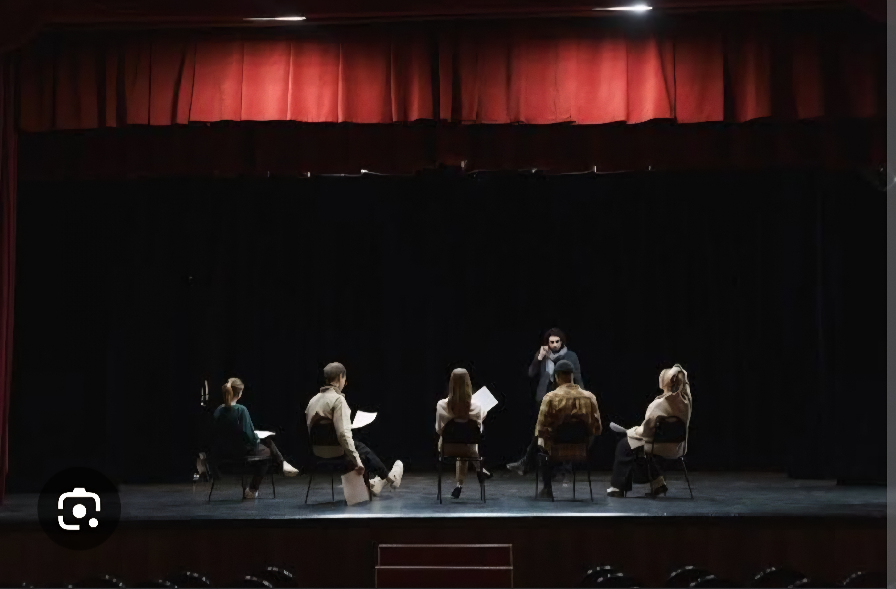
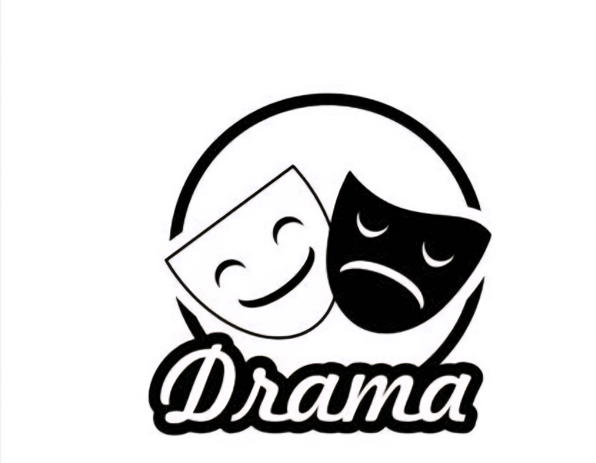

Kenmerke van 'n Drama
- Karakters: Die mense of diere wat in die drama speel.
- Dialoog: Die woorde wat die karakters vir mekaar sê.
- Toneel: 'n Deel van die drama wat op een plek en tyd afspeel.
- Dekor: Hoe die verhoog lyk (soos meubels, bome, huise ens.).
- Kostuums: Die klere wat die karakters dra om hul rolle te wys.
- Handeling: Wat in die drama gebeur, die storie self.
- Regisseur: Die persoon wat sê hoe almal moet speel en waar hulle moet staan.
- Doel: 'n Drama is daar om ons te leer of om ons te vermaak.
Wat is Karaktereienskap?
In 'n drama beteken karaktereienskap dieselfde as in die regte lewe, maar dit wys vir ons hoe die karakter in die storie is. Dit is die persoonlikheid van 'n karakter – hoe hy of sy dink, praat en optree op die verhoog.

Voorbeelde:
- As 'n karakter altyd ander help, is sy eienskap vriendelik.
- As 'n karakter vir almal jok, is sy eienskap oneerlik.
- As 'n karakter nooit bang is nie, is sy eienskap dapper.
- As 'n karakter vinnig kwaad word, is sy eienskap kort van draad.
Hierdie eienskappe help die gehoor om die karakter beter te verstaan en maak die drama meer interessant.
Die Struktuur van 'n Drama
'n Drama het 'n sekere volgorde of bou wat die storie help vertel.
- Inleiding: Die begin van die drama. Hier ontmoet ons die karakters en sien waar die drama afspeel.
- Probleem / Konflik: Iets verkeerd of moeilik gebeur. Dit maak die storie interessant.
- Ontwikkeling: Die gebeure wat wys hoe die probleem groter raak. Die spanning bou op.
- Klimaks: Die belangrikste en spannendste deel van die drama. Die probleem raak baie groot of daar gebeur iets dramaties.
- Afloop / Oplossing: Die probleem word opgelos of die storie eindig. Dit kan 'n gelukkige of hartseer einde hê.
Kort voorbeeld:
'n Meisie verloor haar hond (inleiding). Sy soek oral (probleem ontwikkel). Sy hoor die hond het vasgesit in 'n heining (klimaks). Sy red hom (oplossing).
Instruksieteks in Drama
In 'n drama is 'n instruksieteks die deel wat vir die akteurs sê wat om te doen. Dit wys die stappe of instruksies om die storie reg op te voer.
Kenmerke:
- Instruksies vir aksie: sê wat die karakter moet doen, bv. "Loop na die deur" of "Skree vir hulp."
- Instruksies vir stem: sê hoe die karakter moet praat, bv. "Fluister sag" of "Skree kwaad."
- Instruksies vir gesig of liggaam: bv. "Kruis jou arms" of "Kyk hartseer."
- Kort en duidelik: dit moet maklik wees om te volg.
Voorbeeld:
Karakters: Anna en Piet
Anna staan by die tafel en kyk hartseer.
Piet hardloop na Anna en sê: "Wat het gebeur?"
Anna sit haar hande op haar gesig en fluister: "Ek het my kat verloor."Hierdie instruksies help die akteurs om presies te weet hoe om die storie te speel.